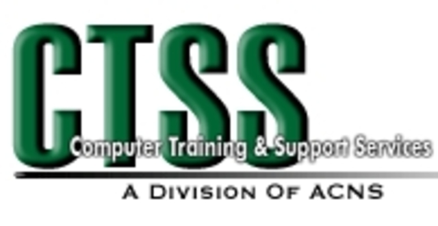
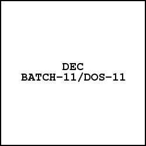
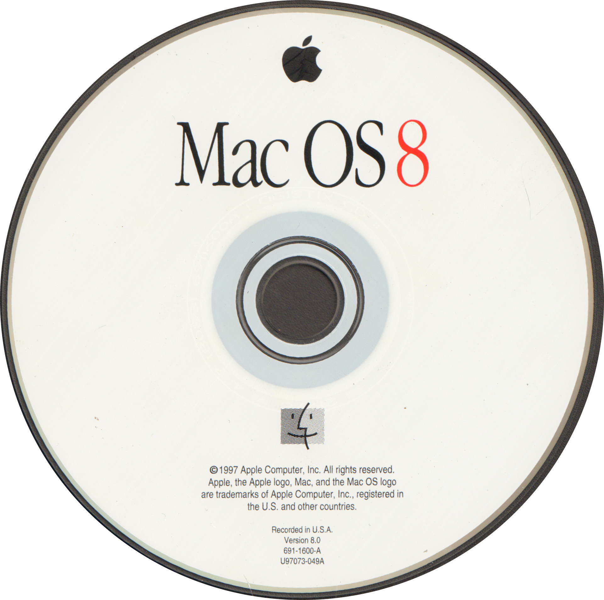
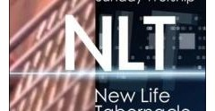
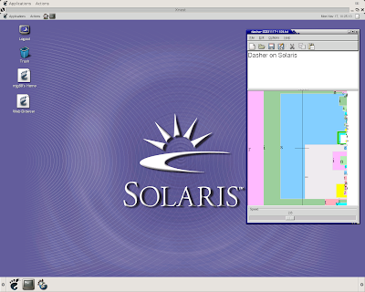
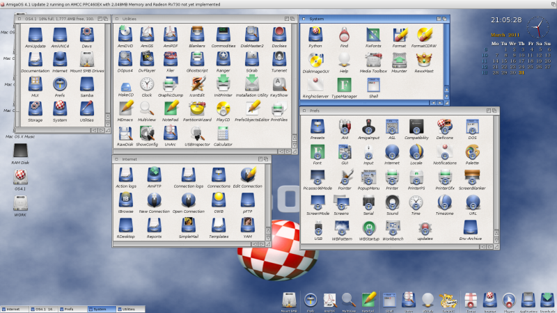
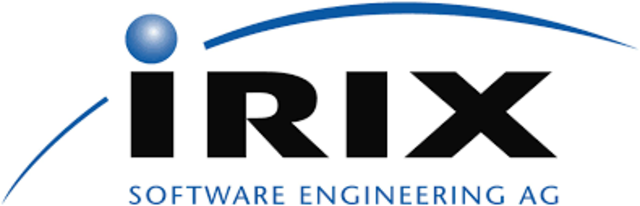
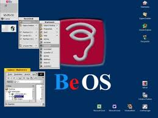
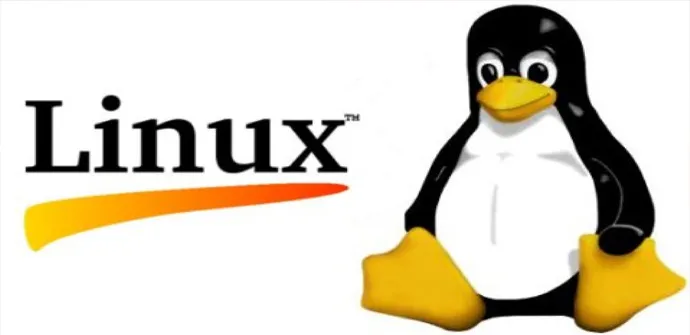
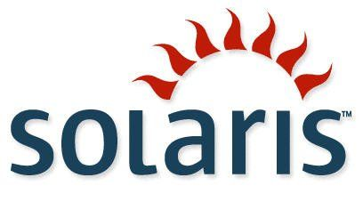

Cronologia de Sistemas Operativos

«GM NAA I/O»
El surgimiento del primer sistema operativo ocurre en la decada de los años 50, especificamente en 1956 año en que fue creado el primer sistema operativo llamado GM-NAA I/O para un ordenador IBM 704 su funcion era comenzar a ejecutar un programa cuando el anterior programa terminaba.

«CTSS»
CTSS indica SISTEMA DE TIEMPO COMPARTIDO COMPATIBLE es uno de los primeros sistemas operativos de tiempos compartidos y compatible que se refiere a su compatibilidad con el sistema operativo por lote.
«EXEC II»
Es un sistema operativo aplicado a procesamiento por lotes , reune un grupo de trabajo comunes para ser ejecutados al mismo tiempo.
«MULTICS»
Es uno de los pocos sistemas operativos desarrollados en un lenguaje de alto nivel. Uno de los sistemas operativos de multiprocesamiento esta EXEC 8.
«Unix»
Unix es un sistema operativo portable, de multiples tareas y multiples usuarios, es la base de fundamental de muchos sistemas operativos que hoy en dia existen.

«BATCH-11»
BATCH-11 / DOS-11, también conocido simplemente como DOS-11, es un sistema operativo descontinuado fue el primer sistema operativo que se ejecutó en la minicomputadora Digital PDP-11.

«OS/8»
OS/8 fue el sistema operativo más utilizado en la minipc PDP-8 desarrollado por Digital Equipment Corporation de Maynard
«VM/CMS»
Es un sistema operativo de máquina virtual para computadores centrales o mainframes, plataformas como System/370, System/390, zSeries, System Z9 además de otros sistemas compatibles como el emulador Hércules.
«CP/M»
CP/M (Control Program for Microcomputers) Es un sistema operativo de un solo usuario/Una sola tarea . Se trato de un sistema operativo más popular entre las computadoras personales por los años 70 , sufre modificaciones para ejecutarse en un IBM PC.
«Apple DOS»
Fue un sistema operativo de disco para la serie de microordenadores de la serie Apple II.

«NLTSS»
Era un sistema operativo que se desarrolló de forma activa en el Lawrence Livermore Laboratory tambien conocido como sistema de tiempo compartido.
«QDOS MICROSOFT xenix»
El QDOS (siglas en inglés de "Quick Disk Operating System"), en español "Sistema Operativo rápido de disco", imitaba al sistema operativo CP/M. Microsoft XENIX era un sistema operativo tipo UNIX desarrollado por Microsoft. Microsoft lo llamó así debido a que no tenía licencia para utilizar el nombre "UNIX". A día de hoy es un sistema obsoleto, sin embargo, ocupaba poco espacio de disco y era rápido.
«MS-DOS»
Sistema operativo de disco de Microsoft) fue el miembro más popularmente conocido de la familia de sistemas operativos DOS de Microsoft, y el principal sistema para computadoras personales compatible con IBM PC en la década de 1980 y mediados de los 90, hasta que fue sustituida gradualmente por sistemas operativos que ofrecían una interfaz gráfica de usuario, en particular por varias generaciones de Microsoft Windows.

«SunOS»
Fue la versión del sistema operativo derivado de Unix y BSD desarrollado por Sun Microsystems para sus estaciones de trabajo y servidores hasta el principio de los años 1990. Ésta estaba basada en los UNIX BSD con algunos añadidos de los System V UNIX en versiones posteriores.
«Novell NetWare»
Es un sistema operativo de red, una de las plataformas de servicio para ofrecer acceso a la red y los recursos de información, sobre todo en cuanto a servidores de archivos. Fue retirado en 1995 por Ray Noorda, junto al escaso marketing de Novell hicieron que el producto perdiera mercado, aunque no vigencia por lo que se ha anunciado soporte sobre este sistema operativo hasta el año 2015.
«MSX-DOS»
Es un sistema operativo de disco, para standar de computadoras domesticas de 8 bit.

«AmigaOS»
AmigaOS es el nombre que recibe el conjunto de la familia de gestores de ventanas , IBM OS/2 intento sustituir a DOS como SO de los PC.«AIX»
Es un SO Unix corre en los servidores IBM proporciona escalabilidad,es fiable y manejable.

«IRIX»
IRIX es un sistema operativo compatible con Unix, creado por Silicon Graphics para su plataforma MIPS de 64 bits.
«MVS ESA»
MVS (Multiple Virtual Storage, Múltiple Almacén Virtual en español) fue el sistema operativo más usado en los modelos de mainframes System/370 y System/390 . Se utiliza en aplicaciones comerciales y bancarias.
«NEXTSTEP»
NeXTSTEP es el sistema operativo orientado a objetos, multitarea que NeXT Computer, Inc. diseñó para ser ejecutados en los computadores NeXT.

«BeOS»
Es un sistema operativo para PC desarrollado por Be Incorporated en 1990, orientado principalmente a proveer alto rendimiento en aplicaciones multimedia.

«Linux»
GNU/Linux es un conjunto de sistemas operativos libres multiplataforma, multiusuario y multitarea una version mejorada de UNIX. Dispone de ventanas haciendolo visualmente atractivo.

«SOLARIS»
Es un sistema operativo certificado oficialmente como version de UNiX.
«WINDOWS NT»
Es un sistema operativo de 32 Bit.
«OPEN BSD»
Es un SO libre tipo Unixmultiplataforma, basado en 4.4BSD. Es un descendiente de NetBSD , con un foco especial en la seguridad y la criptografía.
«WINDOWS NT»
Es un sistema operativo de 32 Bit.
«WINDOWS NT»
Es un sistema operativo de 32 Bit.
«WINDOWS NT»
Es un sistema operativo de 32 Bit.
«WINDOWS NT»
Es un sistema operativo de 32 Bit.
«WINDOWS NT»
Es un sistema operativo de 32 Bit.
«WINDOWS NT»
Es un sistema operativo de 32 Bit.